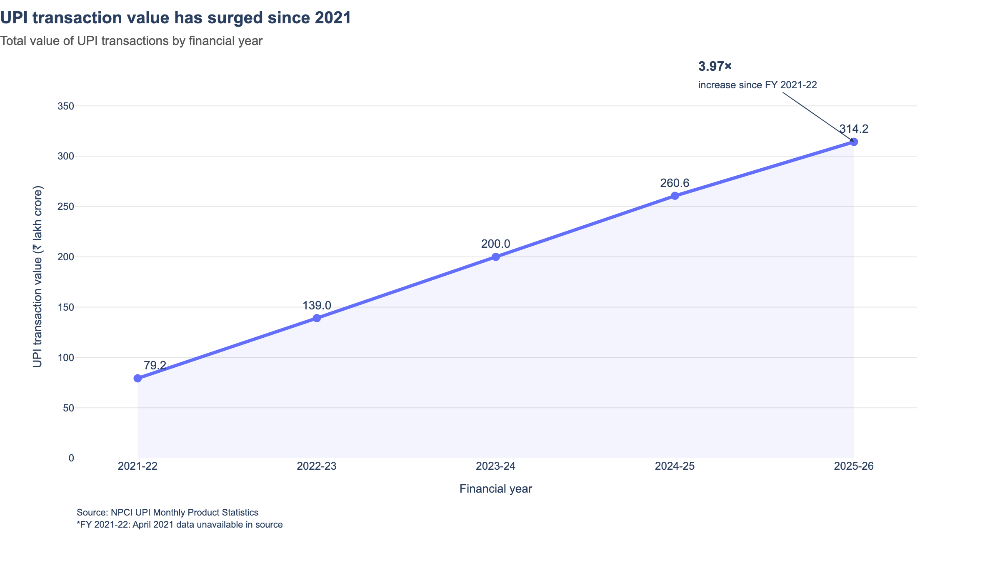
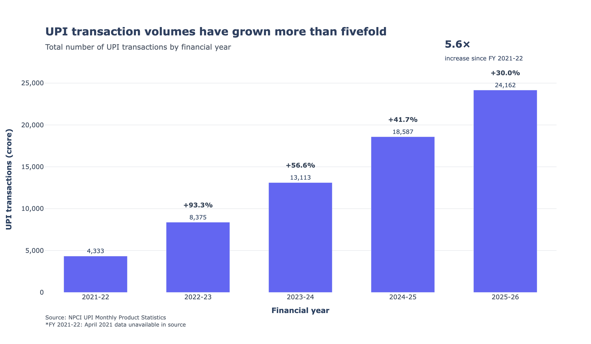
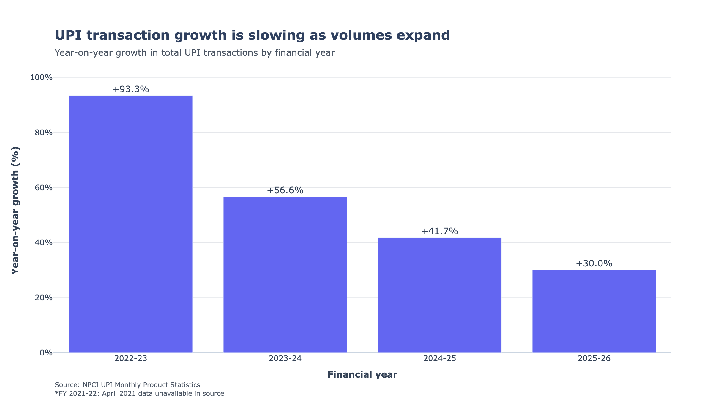
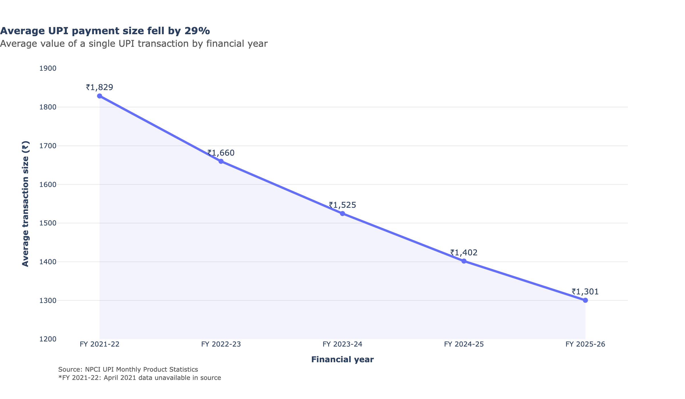
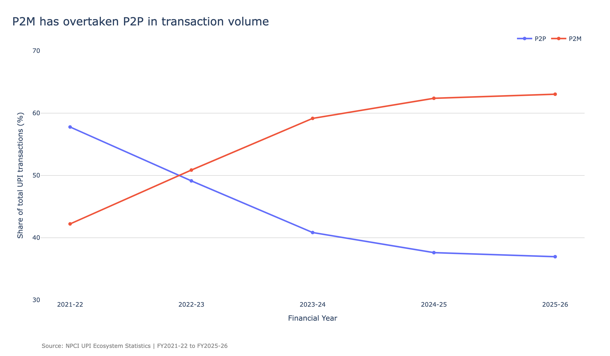

Free UPI Made History, MDR Could Change It
UPI grew from a zero-MDR payment system into India’s dominant digital payment network. But as transaction sizes fall and merchant payments take a larger share of the system, the return of MDR raises questions about who will ultimately bear the cost.
CHENNAI: Starting on October 15, every time we pay a shopkeeper more than ₹2,000 through Google Pay or PhonePe using the Unified Payments Interface (UPI), the merchant will incur 40 paise for every ₹100 paid, capped at ₹300. This is because the National Payments Corporation of India (NPCI) recently introduced a 0.4% Merchant Discount Rate (MDR) on transactions above ₹2,000. While the government insists that the cost will be borne by merchants, the move has drawn criticism from opposition leaders and others. Also, the timing of the MDR is hard to ignore: the fee lands right in the middle of the festive season, when small retailers see their biggest surge in payments all year. It is the first time in six years that an MDR has been imposed on UPI merchant payments.
Built to curb the black economy
Ten years ago, UPI was launched as a pilot on April 11, 2016, before going live for customers that August through UPI-enabled bank apps. One of the government's stated goals was to move India towards a less-cash, more digital economy, with UPI providing a way to make instant payments through a common platform. What made UPI particularly attractive, beyond the technology, was its cost: there was no charge for making these payments. India moved to a zero-MDR regime for UPI in 2020, meaning eligible merchant transactions did not carry an MDR. That zero-cost model helped make UPI part of everyday payment habits.
The numbers behind the boom
The scale UPI reached in that time is hard to overstate. Total transaction value rose from ₹79.23 lakh crore in FY2021-22 to ₹314.23 lakh crore in FY2025-26, nearly four times over, in four years.

Total UPI transaction value by financial year, in ₹ lakh crore.
Source: NPCI UPI Monthly Product Statistics.
Volume grew even faster, from 4,333 crore transactions to 24,162 crore, a jump of roughly 5.6 times.

Total UPI transaction volume by financial year, in crore transactions.
Source: NPCI UPI Monthly Product Statistics.
But look closer at the year-on-year growth and a pattern shows up. Value growth slowed from 75.4% in FY2022-23 to 20.6% by FY2025-26, and volume growth fell from 93.3% to 30.0% across the same years.

Year-on-year growth in total UPI transaction volume.
Source: NPCI UPI Monthly Product Statistics. Calculations by author.
UPI hasn't stopped growing. It's just growing off a much larger base now, so each year's percentage jump looks smaller even as the absolute numbers keep climbing.
Bigger volumes, smaller payments
What's arguably more interesting is what's happening to the size of each transaction. The average UPI payment fell from ₹1,829 in FY2021-22 to ₹1,301 in FY2025-26, a drop of about 29%.

Average UPI transaction value by financial year, in ₹.
Source: NPCI UPI Monthly Product Statistics. Calculations by author.
That could mean UPI's growth has come mostly from small, everyday payments rather than big-ticket ones. It lines up with another shift in the data: person-to-merchant (P2M) payments made up just 42.22% of UPI volume in FY2021-22 but had climbed to 63.04% by FY2025-26, overtaking person-to-person (P2P) transfers along the way.

Share of UPI transaction volume by payment type.
P2P: person to person. P2M: person to merchant.
Source: NPCI UPI Ecosystem Statistics. Calculations by author.
UPI, in other words, has moved from mostly being a way to send friends and family money to becoming the way India pays at the shop counter for amounts that keep getting smaller.
The reason everyone is concerned about MDR
This is exactly the segment the new MDR is aimed at: P2M payments above ₹2,000. Since more than 95% of merchant transactions reportedly fall under that threshold, the government can credibly say most UPI users won't notice anything. But P2M's share of UPI has been rising for five straight years, and it's precisely the growing part of the pie that the fee now touches.
Whether merchants quietly absorb the 0.4% or find ways to pass it on to customers is something only time will tell after the implementation of the fee on October 15.
History has tried this before
But this is not the first time the government has introduced such a kind of fee on transactions. India has attempted something like this once already, and it didn't last. In 2005, the government introduced a Banking Cash Transaction Tax (BCTT), a tiny 0.1% levy on large cash withdrawals, meant to nudge people towards traceable banking and away from black money. But it was withdrawn in April 2009.
There's a chance something similar could play out with this MDR. If enough small merchants push back, or if UPI adoption shows even a slight dent, it isn't hard to imagine the government walking this fee back, the way it did with BCTT.
The timing
There's also the timing. The festive season is around the corner. This is the time when small and medium retailers see a spike in their sales. During festivals, customers tend to spend more per transaction, pushing more payments over that ₹2,000 line.
If shopkeepers get wary of the extra cost eating into festive margins, some might start nudging customers back towards cash for bigger purchases, at least until things settle.
None of this is certain. But UPI's ten-year run without an MDR on merchant payments has ended, and how India's smallest retailers respond over the next few months is worth watching closely.
Methodology
The analysis uses NPCI's monthly UPI transaction statistics from FY2021-22 through FY2025-26. Financial-year totals were calculated by summing the monthly data for each April-to-March financial year. Average transaction size was calculated by dividing total transaction value by total transaction volume. P2P and P2M shares were calculated from NPCI's monthly P2P and P2M transaction statistics and aggregated by financial year.
FY2026-27 data is incomplete and is therefore excluded from full-year comparisons.